Regresar
IMAGENES JUGADORESLa seleccion de fútbol del Brasil (Selena Brasileira de Futebol en portugués) es el equipo que representa a dicho país en las competiciones oficiales. Su organizacion está a cargo de la Confederación Brasilena de Fútbol, perteneciente a la Confederación Sudamericana de Fútbol (Conmebol). Conocida como «Scratch du Oro», «La Verde-amarela» o «La Canarinha», se encuentra afiliada a la FIFA desde 19233 y es miembro asociado y fundador de la Conmebol desde 1916.4 En materia dirigencial su actual presidente es José Maria Marin que figura como el 19.º presidente de la Confederacion Brasilena de Fútbol, cargo que ocupa desde el 12 de marzo de 2012. Brasil es la selección más exitosa en la historia de la Copa Mundial de Fútbo l5 y de la Copa Confederaciones ya que tiene el récord de Campeonatos Mundiales ganados con cinco títulos y también posee el récord en la Copa FIFA Confederaciones con cuatro títulos. En la Copa América ha obtenido ocho títulos, 11 segundos puestos y siete terceros. Actualmente se encuentra liderando la Tabla General de la Copa del Mundo y la de Copa Confederaciones. Tambien ostenta el honor de ser la unica selección que ha participado en todas las ediciones de la Copa Mundial de Fútbol. Siempre se ha clasificado para la Copa Mundial de Fútbol sin jugar ninguna repesca. Brasil ganó un total de 62 títulos internacionales oficiales a nivel profesional y de selecciones de base, tratándose de un récord mundial. Por todos estos logros, la Conmebol la considera como La más gloriosa y exitosa de todas las selecciones nacionales de Sudamérica y del Mundo.8 9 10 Ha sido la única seleccion en el mundo en obtener 12 veces el Premio al equipo del año por la FIFA, el cual distingue al mejor seleccionado de la clasificación de la FIFA, 11 siendo la selección que más veces lo obtuvo en el mundo, 4 veces el Premio Fair Play de la FIFA12 por su juego limpio, 1 Premio al equipo más atractivo por la FIFA13 y 1 Premio Príncipe de Asturias de los Deportes.
| NOMBRE | POSICIÓN | EDAD | PESO |
|---|---|---|---|
| Neymar | Delantero | 23 | 65 kg |
| Daniel Alves | Delantero | 32 | 64 kg |
| David Luiz | Defensa | 28 | 84 kg |
| Thiago Silva | Defensa | 30 | 79 kg |
| Hulk | Delantero | 28 | 75 kg |
| Marcelo | Defensa | 27 | 73 kg |
| Fernandinho | Centro | 30 | 67 kg |
| Oscar Júnior | Centro | 23 | 63 kg |
| Júlio César | Portero | 35 | 79 kg |
| Willian | Centro | 26 | 72 kg |
| Dante | Defensa | 31 | 85 kg |
| Ronaldinho | Centro | 35 | 78 kg |
| Kaká | Defensa | 33 | 82kg |
| Bernard | Centro | 22 | 60 kg |
La selección brasileña no tiene un estadio nacional de origen al igual que muchos otros equipos y selecciones nacionales. Por tal motivo la selección brasileña juega sus partidos amistosos y clasificatorios en diferentes escenarios. Entre éstos se encuentran el mítico Estadio Maracaná que fue sede de la Copa Mundial de Fútbol de 1950 celebrada en Brasil. El estadio Olímpico João Havelange donde la selección brasileña disputó partidos de eliminatorias para el Mundial de 2010.44 Los estadios Morumbi, Mineirão, Beira-Rio, Mané Garrincha entre otros, son utilizados igualmente por la selección. Sin embargo, la selección brasileña disputó encuentros oficiales para las eliminatorias del mundial de fútbol Alemania 2006 en estadios más pequeños como el estadio Vivaldo Lima en Manaos,45 el estadio Pinheirao en Curitiba,46 el estadio Rey Pelé en Maceió,47 el estadio Serra Dorada en Goiânia48 y el estadio Mangueirão en Belém.
cerrarClick para mostrar Estadio
Abrir Panel 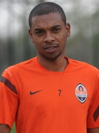
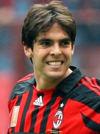
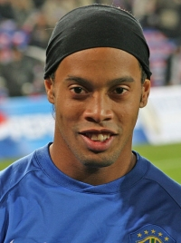
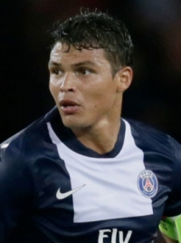
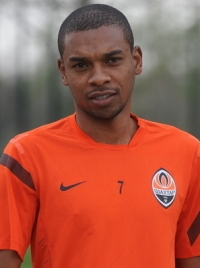
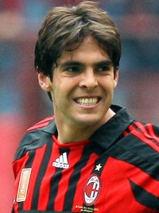
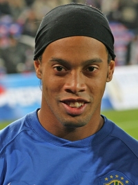
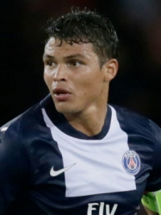
 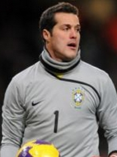
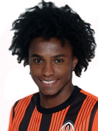
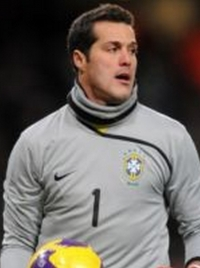
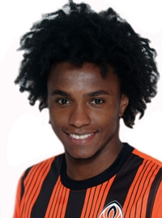